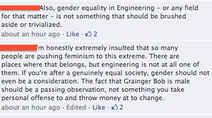
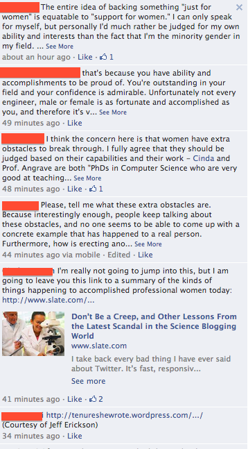

June 8, 2014
Girls (Women) in Technology
When I Googled "problems facing the tech world" The majority of the issues that came up were actually not technical, but cultural. The response I saw most often was "Why we need more women in technology." This hit close to home because I am a woman in engineering and I have been part of that community for 4 years.
Here are a few pieces of the conversation I refer to in this blog. There were many more comments reflective of many sides of the issue.
 {kind=link}
{kind=link}
Earlier this year, I posted a petition on the UIUC Computer Science Facebook page. The petition advocates commissioning a female counterpart to Grainger Bob, a statue that sits outside of UIUC's Grainger Library. The reasoning on the petition is that we should support the presence of women in engineering.
The ensuing conversation left me very confused and angry. One person in the conversation, a young woman, is angry that people only see her as an “empowered” woman in engineering. She thinks it is feminist to the extreme and promotes the wrong idea. She feels her accomplishments are secondary to her gender in many people’s eyes and that this statue would only reinforce that.
I can agree, that I do not want to be first defined by my gender and then secondarily by my own intelligence and capability. I feel her same anger when I tell people, even friends, me that I only got the interview because I am a girl. But I then if I reflect on what I accomplished in College- I held leadership positions in student organizations and I had many diverse work experiences on top of a broad engineering curriculum at a great school.
But I have to argue with her insistence that ‘discrimination doesn’t take place and that no one can prove that gender inequality in the tech world doesn’t exist. It does. I may be oversensitive, but why was it that when I first stepped on this campus that the guys didn’t let me touch the computer during lab? Why did I feel like people asked me if i needed help more than other people? Was it because I am a girl? Why was it that I felt I had to fight, push and grow faster as a person to be louder than I really am, more aggressive than I really am to succeed? Why did I have to make a personality change (at least outwardly) to be a more successful engineer?
I do not want to be mean and aggressive. I want to be nice. I want to use the computer.
And why is it such a bad thing to want to represent women in engineering and technology? We should help each other. When we compete to be the best, it should be motivated by the need to better than who we already are, not motivated by a desire to be better than our gender. Gender shouldn’t matter.
And to reach that point of equality when we can take gender out of the equation completely, we need to somehow promote more women in engineering. We need to start somewhere. I like the statue.